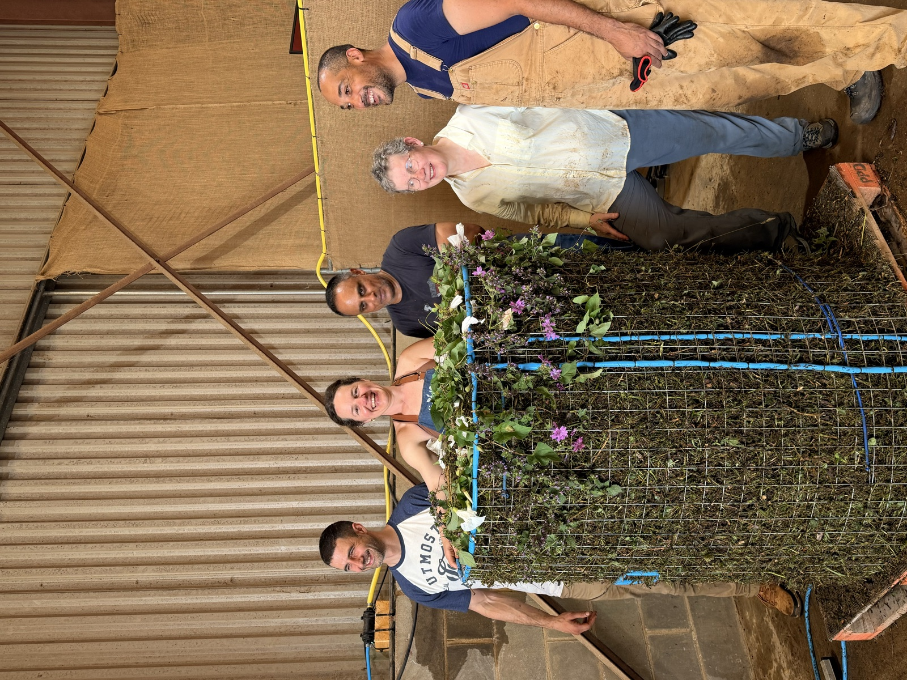
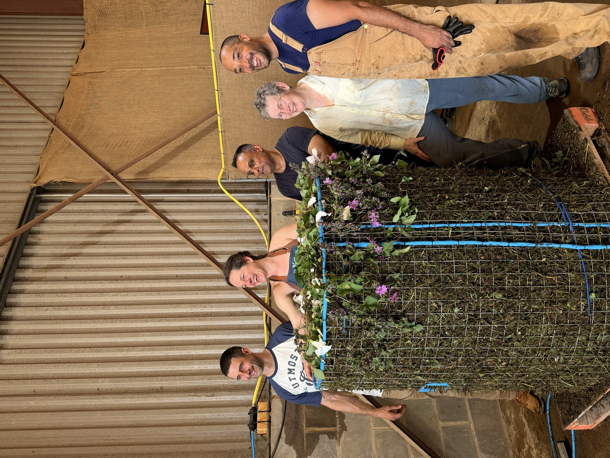
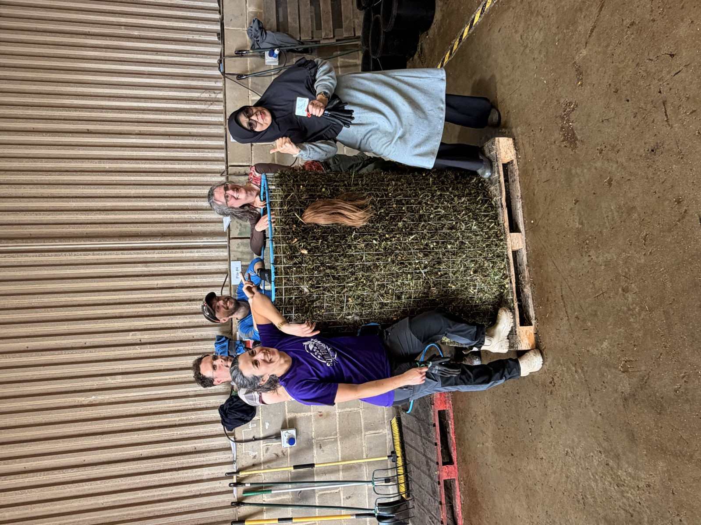

We are Soil Regenerators
Students, graduates, consultants, and lab-techs in more than 100 countries, on six continents. Here is what we have been doing, where, and when.
enrollment records, confirmed August 2026

News from the community
Every post is drawn from soilfoodweb.com and links to its source.
- December 2026
-
Pakistan
Soil Health Week Pakistan 2026
The second year of Soil Health Week in Pakistan, running 1 to 7 December 2026. Co-led by Wild Soils UK (Nick Padwick) and TrashIt, a woman- and youth-led compost enterprise. Last year's event reached more than 600 participants across 60 districts, with talks, farm visits, and compost demonstrations at universities across Karachi and Sindh. The Soil Food Web Foundation is a supporting partner.
With Nick Padwick (Wild Soils UK) and the TrashIt team
Workshop or event Last year's Soil Health Week TrashIt
- June 2026
-
Wild Ken Hill, Norfolk, England
Accelerator Workshop at Wild Ken Hill


Our ten-day Accelerator Workshop ran from 15 to 26 June 2026 at Wild Ken Hill, a regenerative farm and rewilding estate on the Norfolk coast. All 25 places sold out.
Led by our Advanced Program mentors
The mockup carried 39 photographs and clips from these ten days as Google Drive links, still in HEIC and MOV. They belong on the story page instead, converted, at public/assets/community/. Linnea supplies the files; the story page holds the slots.
Workshop or event Read the story Source
- April 2026
-
Online
Our first Permaculture Design Certification cohort begins
The school launched its first Permaculture Design Certification course. The next cohort starts on 16 September 2026.
Workshop or event Source
- November 2025
-
Online
A Living Legacy: four webinars in honour of Dr. Elaine
Longtime students of Dr. Elaine shared how her research shaped their own work, in a free four-part webinar series.
With Daniel Tyrkiel and Adam Swann, Todd Harrington, Celine Basset, Nick Tomasini, Vivian Kaloxilos, and Jo Tobias
Workshop or event Source
- September 2025
-
Karachi and Sindh, Pakistan
Soil Health Week in Karachi and Sindh
Consultant Nick Padwick of Wild Soils UK and the TrashIt team ran six days of talks, farm visits, and compost demonstrations for more than 600 people from 60 districts. They taught at Karachi University, Habib University, and Sindh Agriculture University, and hosted the first Farmers' Baithak at Rahuki Farms in Hyderabad, with growers from seven districts. TrashIt's founders studied with us on scholarship, and TrashIt has since opened a soil microbiology lab.
With Nick Padwick and the TrashIt team
Workshop or event Source
- August 2025
-
United Kingdom
Nick Padwick and Daniel Tyrkiel in The Guardian
The Guardian featured mentor Nick Padwick, who now grows wheat in a biologically healthy system for a premium market, and graduate Daniel Tyrkiel, who runs microbiology field trials with University of Manchester researcher Dr. Janice Lake.
Graduates Read the article Source
- June 2025
-
Nick Padwick's farm, England
Our June workshop on Nick Padwick's farm
Mentor Nick Padwick hosted our June workshop on the regenerative farm he runs in the UK. One student, Melita Coggins, called it a life changing experience.
With mentor Nick Padwick
Workshop or event Source
- March 2025
-
Costa Rica
Workshop in Costa Rica
Mentor Gerald Ramirez showed students how to make biological liquid amendments, and students and mentors spent long sessions at the microscope together.
With mentor Gerald Ramirez
Workshop or event Source
- December 2024
-
Online
Our 2024 graduates
107 people earned the lab-tech title in 2024, and 28 finished our consultant and grower programs. Our 50th consultant finished the program this year.
Congratulations to Alex Yakaumo, Anton de Jager, Declan Ramsay, Kent Holle, Kevin Chee, Leslie Lewis, Nick Padwick, Robbin Pott, Vera Dorzhinova, Dora Taklec, Stefan Nieuwenhuijsen, Nathalie Sequeira, Arved Meinzer, Joshua Stone, Mario Villamiel, Wes Sanders, Niels de Jong, Wendy Mickle, Kyle Babcock, Jeroen Boss, Nicolas Rondeau, Reinhard Leeb, Jana Paskova, Julian Ravenscroft, Mary Beerman, Dorota Romanowski, Bianca Lech, and Richard Oosthuysen
Graduates Source
- July 2024
-
Costa Rica
Compost workshop in Costa Rica
Students from our consultant and grower programs came together for a hands-on workshop on making biologically complete compost.
Workshop or event Source
- February 2024
-
Mexico
Workshop in Mexico with Ecosystem Restoration Camps
We ran a workshop in Mexico together with Ecosystem Restoration Camps.
Workshop or event Source
- Nothing here for this filter yet. Try All time, or tell us what you did.


Coming up
- 16 September to 20 December 2026Permaculture Design Certification cohort
- 19 to 30 October 2026Accelerator Workshop India 2026, Coimbatore
- 1 to 7 December 2026Soil Health Week Pakistan 2026
Community by region
- EuropeLatest Jun 2026
- AsiaLatest Sep 2025
- Latin AmericaLatest Mar 2025
What appears on the map
Appearing on the map is opt-in. Nobody is placed on it without asking to be. If you opt in, the map shows a dot at city or region level, along with the name and title you choose to publish. Street addresses, exact coordinates, email addresses and phone numbers are never shown. Hubs, workshop sites and documented case-study sites are organisational locations, not members' homes. To come off the map, email info@soilfoodweb.com with the subject "Community map". Read our privacy policy for more.
Interactive map embed. Opt-in member locations at city/region level only, never exact addresses. Legend: green = members & professionals, gold = hubs & workshop sites. Data: alumni opt-in + events system.
Work with one of us
Every consultant and lab-tech in our directory trained with us and earned their title. Consultants finished our full professional program. Lab-techs finished our microscopy training. Search by region or specialty.
The directory prototype's dataset is fictional (src/lib/data.ts declares it). Real practitioner records required before this ships.
Join the Soil Food Web School's Public Community
Free access to decades of soil food web science, regularly updated resources, and a global community of regenerative growers, designers, and soil health advocates. This is where the journey begins.
4,657 members and growing. Connect with growers, gardeners, farmers, regenerative designers, and scientists from every corner of the world.
Join us
Every one of us started with one course, one webinar, or one afternoon at a microscope.